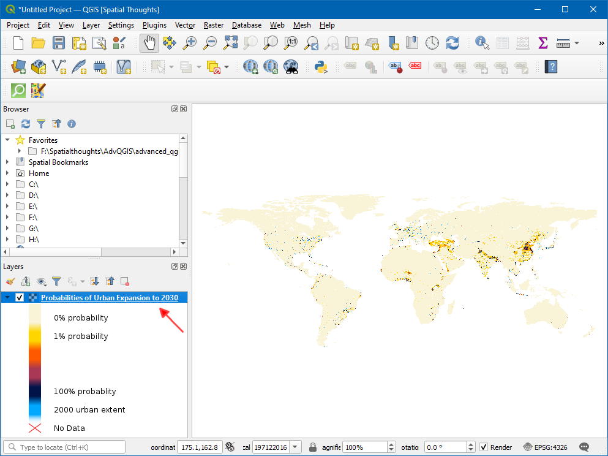
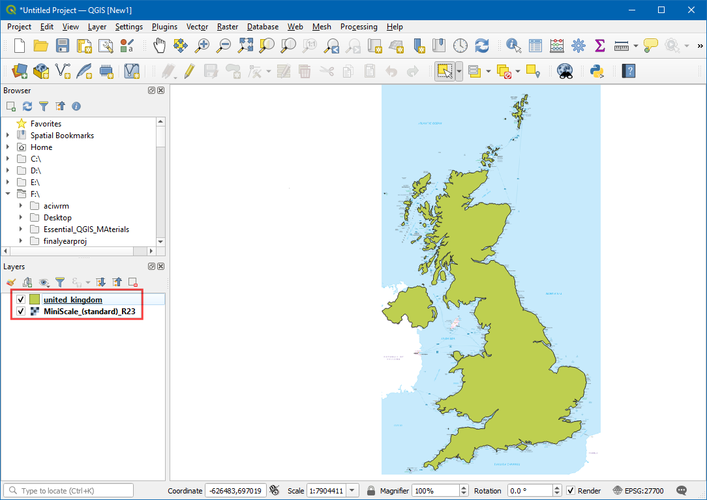

استایلسازی و تحلیل شطرنجی پایه (QGIS3)¶
بسیاری از مشاهدات و تحقیقات علمی مجموعه داده های شطرنجی را تولید می کنند. رسترها شبکههایی از پیکسلها هستند که مقدار خاصی به آنها اختصاص داده شده است. با انجام عملیات ریاضی روی این مقادیر، می توان تحلیل جالبی انجام داد. QGIS دارای برخی از قابلیتهای تحلیل اولیه است که از طریق راستر Calculator تعبیه شده است. در این آموزش، گزینههای موجود برای استایلسازی و عملکردهای ارائهشده توسط ماشینحساب شطرنجی را بررسی میکنیم.
بررسی اجمالی کار¶
ما از داده های شبکه جمعیت برای ایجاد یک نقشه موضوعی از تغییر جمعیت جهانی بین سال های 2000 و 2010 استفاده خواهیم کرد.
مهارت های دیگری که یاد خواهید گرفت¶
How to copy/paste styles between layers
Get the data¶
We will use the Gridded Population of the World (GPW) v4 dataset from Columbia University. Specifically, we need the Population Count for the entire globe at 2.5 Degree Minute resolution in GeoTiFF format and for the year 2000 and 2010. You will need a free Earth Data account to download the data.

For convenience, you may directly download a copy of the datasets from the links below:
gpw-v4-population-count-rev11_2000_2pt5_min_tif.zip
gpw-v4-population-count-rev11_2010_2pt5_min_tif.zip
Data Source [GPW4]
Procedure¶
Open QGIS and locate the downloaded files in the Browser panel. Expand the
gpw-v4-population-count-rev11_2000_2pt5_min_tif.zipfile and drag thegpw-v4-population-count-rev11_2000_2pt5_min.tiffile to the canvas.

A new layer
gpw-v4-population-count-rev11_2000_2pt5_minwill be added to the Layers panel. Similarly, locate thegpw-v4-population-count-rev11_2010_2pt5_min_tif.zipfile and drag thegpw-v4-population-count-rev11_2010_2pt5_min.tiffile to the canvas.

Let's explore these layers. Click the Identify button on the Attributes Toolbar. Once the tool is selected, click on any point on the canvas.

The value associated with that pixel will be displayed in a new Identify Results panel. In the Identify Results panel, change the Mode to
Top down. This will display pixel values of all rasters instead of just the topmost layer. Compare the values from both the layers. As the resolution of the rasters is approximately 5km x 5km, the pixel values represent the total population in the area (25 sq. km) represented by the pixel.

Close the Identify Results panel. Let's create a better visualization of the layers. Click the Open the layer Styling panel button in the Layers panel.

In the Layer Styling panel, click the Render type dropdown and select
Singleband pseudocolorrenderer.

This renderer will style the layer using a color ramp. The default color ramp is white-red where the minimum value will be assigned the white color and the maximum value in the layer will be assigned the red color. The intermediate values will be assigned a shade of red linear interpolation. Expand the Min / Max Value Settings and choose
Cumulative count cutoption. You will see that the map visualization is much better now. The standard data range is set from 2% to 98% of the data values, meaning that the outliers will not be used to set the minimum and maximum values, resulting in a much more representative visualization.

Close the Layer Styling panel. We can apply the similar styling to the other layer as well. But there is an easier way to transfer the styles from one layer to the other. Right-click the
gpw-v4-population-count-rev11_2010_2pt5_minlayer and select .

Now right-click the un-styled
gpw-v4-population-count-rev11_2000_2pt5_minlayer and select .

The same styling parameters will be applied to the other layer. This feature is particularly useful when you want to compare different layers using the same categorization. As you toggle the visibility of the top layer, you can see the changes in population visually.

Our task is to create a thematic map of the changes in population. Let's compute the difference between the 2 layers and create another raster where each pixel represents the change in the population. Go to .
In the Raster bands section, you can select the layer by double-clicking on them. The bands are named after the raster name followed by
@and band number. Since each of our rasters have only 1 band, you will the names with@1appended to the layer name. The raster calculator can apply mathematical operations on the raster pixels. In this case we want to enter a simple formula to subtract the 2010 population from 2000. Enter the following expression. Next, click the ... button next to Output layer.
"gpw-v4-population-count-rev11_2010_2pt5_min@1" - "gpw-v4-population-count-rev11_2000_2pt5_min@1"
Enter
population_change_2010_2000.tifas the Output file. Click OK to start the computation.

Once completed a new layer
population_change_2010_2000will be added to the Layers panel. Let's change the styling so that the negative and positive population changes are better visualized. Click the Open the layer Styling panel button in the Layers panel.

One option is to use the similar styling technique as earlier and choose a diverging color ramp. Click the Color ramp drop-down and select
Spectralramp. Click the drop-down again and chooseInvert Color Rampto assign blues to low values and reds to high values.

This is a good visualization, but not easy to interpret. Let's create a better map with 4 discrete categories,
Decline,Neutral,GrowthandHigh Growth. Scroll down to the tables with classes. Hold the Shift key and select all the rows. Click the Remove selected row(s) button.

Change the Interpolation mode to
Discrete. We will now create a color map manually. Click the Add values manually button. Enter-100as the Value andDeclineas the Label. Assign blue color to this category. The way color map works is that all values lower than the value entered will be given the color of that entry. You will notice the canvas will show only those areas with negative population change.

Complete the color-map with suitable values. I chose
100,1000and100000as the upper-bounds for theNeutral,GrowthandHigh Growthcategories respectively. Assign colors to each of created categories, for example beige, orange and red.

Once you are satisfied with the visualization, close the Layer Styling panel. You now have a global thematic map of population change.

If you want to give feedback or share your experience with this tutorial, please comment below. (requires GitHub account)